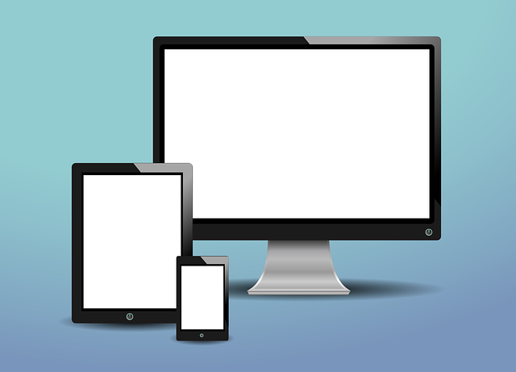

Izhodne enote izpišejo ali oddajajo podatke iz računalnika.
Ukaz, ki si ga vnesel v računalnik, se je izvršil in rezultat je zapisan v pomnilniku. Seveda bi bilo vse skupaj neprijazno, če bi računalnik prikazal le ta zapis. Niz 0 in 1 iz pomnilnika bi ti povedal zelo malo ali pa sploh nič.
Vsak računalnik ima izhodne enote, ki podatke, razumljive računalniku, predstavijo v taki obliki, da so razumljivi človeku (besedilo, govor…). Najpomembnejša izhodna enota je monitor, pogosto uporabljamo tudi tiskalnik, sodobne računalnike pa si težko zamišljamo brez zvočnikov. Če pomisliva, katere izhodne enote računalnika že poznaš? Naštejva in se seznaniva z njimi.
- Monitor (ekran)
- Tiskalnik
- Zvočniki
- Projektor
- Risalnik
- Fotokopirni stroj
MONITOR
Monitor ali prikazovalnik je računalniška izhodna naprava, zmožna prikazovati mirne ali gibajoče slike, ki jih ustvarja računalnik in obdela grafična kartica. Pogovorni izraz za monitor je zaslon (tudi ekran), ki pa je v bistvu samo del monitorja, ki prikazuje sliko. Navadno zasloni ustrezajo enemu od zaslonskih standardov. Nekdaj so bili pomemben sestavni del računalniških terminalov, zato so se že dolgo nazaj uvrstili med standardne zunanje naprave.
Monitor spremlja računalnik od njegovega začetka. Zato bi lahko sklepal, da se v njem ni nič spremenilo ali pa zelo malo. In vendar ni tako. Kot uporabnik želiš čedalje večjo in bolj ostro sliko, ki naj na zaslonu žari v vse več barvah. Teh želja osnovna strojna oprema ni več mogla izpolnjevati, zato so v razširitveno režo na matični plošči vtaknili slikovno (grafično) kartico in jo prek posebnega vmesnika povezali z monitorjem.
Velikost zaslonov (diagonala) se meri v palcih (inčah). Enota enega palca je enaka dolžini 2,54 cm. Pri klasičnih CRT monitorjih je bilo vidno polje zaslona pogosto manjše od obljubljenega, saj so proizvajalci navajali diagonalo katodne cevi, ne pa samo njenega vidnega polja, ki je bila za uporabnika bistvena. Zato je bila diagonala vidnega polja velikokrat manjše od deklarirane dolžine.
Ločljivost zaslona, oziroma kakovost prikaza, je odvisna od števila uporabljenih pik (pixel, picture element - slikovni element, oziroma posamezna pika na računalniškem zaslonu). Manjši kot je piksel, večja je ločljivost. Znotraj omejitev ločljivosti, ki jih dovoljuje zaslon, lahko uporabnik ločljivost in s tem kakovost prikaza po potrebi spreminja. Na enak način lahko uporabnik spreminja tudi število barv.
Obstajajo:
- zasloni s katodno cevjo (CRT)
- zasloni s tekočimi kristali (LCD)
- plazemski zasloni (se po navadi ne uporabljajo na računalniku)
Ostrino zaslona določa velikost točke. Manjša kot je (npr. 0,24), ostrejša bo slika.
Črno-beli zasloni lahko prikazujejo le eno barvo - točka je prižgana ali ugasnjena. Monokromatski zasloni prikazujejo le odtenke ene barve. V obeh primerih je ta barva navadno zelena, oranžna (jantarna), bela ali siva.
Barvni zasloni lahko prikazujejo digitalne (vsak od rdečega, zelenega, ali modrega (RGB) signala je lahko prižgan ali ugasnjen, kar daje možnost za prikaz osmih barv: črne, bele, rdeče, zelene, modre, sinje, škrlatne in rumene) oziroma analogne barve (rdeči, zeleni in modri signali so tu zvezno spremenljivi, kar omogoča poljubno kombinacijo barv).
Večina današnjih LCD zaslonov lahko prikazuje tisoče ali milijone različnih barv v spektru RGB, kar dosežejo z mešanjem rdečih, zelenih in modrih signalov z različnimi jakostmi. Za razliko od LCDjev pa lahko CRT monitorji prikažejo neskončno število barv. Zaslon je lahko tudi občutljiv na dotik prsta ali posebnega pisala in se v tem primeru obnaša kot vhodna naprava.
TISKALNIK
Tiskalnik (printer) je v računalništvu izhodna naprava, ki ti kodirane podatke iz računalnika pretvori v tebi razumljivo obliko, besedilo in/ali sliko, ki jo odtisne na papir ali drug material.
Sporočanje informacij s časopisi, knjigami, revijami in drugimi tiskanimi mediji je že od nekdaj pomembno. Kaj je lepšega kot to, da zvečer svoje misli utopiš v knjigi. Če računalnik ne bi imel možnosti tiskanja, bi bil mnogo manj uporaben.
Za tiskanje podatkov iz računalnika uporabljaš tiskalnik. Verjetno ga imaš doma. Proizvajalci danes ponujajo pestro izbiro tiskalnikov. Z njim različno hitro tiskaš na papir, blago, plastično folijo, CD-je ali kak drug material v barvah ali črno-beli tehniki. Za osebno rabo pa uporabljamo predvsem laserski in črnilni tiskalnik.

ZVOČNIKI
Kaj je v bistvu glavna funkcija zvočnika? "Produciranje zvoka!" boš rekel, ampak tudi zvok ne nastane kar iz ničesar. Pravilnejši odgovor na zastavljeno vprašanje bi bil, da zvočnik pretvarja elektronski signal v našemu ušesu zaznavno valovanje.
Ko želiš iz računalnika slišati zvok, potrebuješ zvočnike. Računalnik pošlje niz enic in ničel proti zvočnemu izhodu. Te se v posebnem elektronskem vezju preoblikujejo v električno nihanje, to pa nato v zvočniku v zvočno valovanje. Iz zvočnika se zvok širi po zraku. Ko privalovi do tvojega ušesa, zaslišiš zvok. Kako visok je, kakšno barvo ima in kakšna je njegova moč, je odvisno od tega, kako so v nizu, ki ga je računalnik poslal proti izhodu, razporejene ničle in enice.
Zvočniki se med sabo razlikujejo tako po obliki, kot tudi po svoji funkcionalnosti. Za oblikovanje zvoka je zelo pomembno, da so zvočniki dovolj vzdržljivi ter da imajo dobro membrano.
Zvočnike delimo na nizkotonske, srednje-tonske in visokotonske.
Nizkotonski zvočnik določene moči ima večjo membrano kot srednje-tonski, saj je velikost membrane odvisna od reproduciranega frekvenčnega območja. Izvedba membrane je odvisna od namena zvočnika. Za visokotonske zvočnike uporabljamo trši in lažji papir, za nizkotonske pa mehkejši in težji.
PROJEKTOR
Projektor je optična naprava, ki poveča prosojne (diaprojektor, grafoskop) ali neprosojne (episkop) slike in jih projicira na površino.
Video projektor projicira množico hitro si sledečih sličic. Zaradi vztrajnosti človeškega očesa se navidezno zlijejo v gibljivo sliko.
Sodobni projektor uporablja več različnih temeljnih tehnologij, da uporabniku ponudi številne možnosti.
Tehnologija projektorjev je ogromno napredovala, odkar je Charles Francis Jenkins prvič zbral svoje prijatelje in družino okoli prvega projektorja, vendar je ta način uživanja v sliki še vedno eden najboljših načinov, kako lahko dobiš gledališko izkušnjo v polni velikosti kar z udobja lastnega kavča. Če imaš prostor za njihovo postavitev, so projektorji lahko eden najboljših (in najbolj bombastičnih) načinov, kako doma uživati v svojih najljubših hollywoodskih filmih ali oddajah.
RISALNIK
Risalnik (plotter) je vrsta tiskalnika. Oblikovan je z namenom, da riše vektorske grafe ter linearne risbe, kot so načrti, tlorise, skice delov in raznih mehanizmov. Tisk je mnogo bolj natančen kot ga zmorejo običajni tiskalniki.
Risalnike uporabljajo na različnih področjih, kot so znanstvena in inženirska dela, razna oblikovanja in dizajn, v arhitekturi in drugih področjih. Večina risalnikov je monokromih, kar pomeni, da tiskajo le črno-belo, obstajajo pa tudi takšni, ki tiskajo v barvah (enostavnejši v 4 barvah, bolj izdelani pa zmorejo tiskati tudi do 8 različnih barv).
FOTOKOPIRNI STROJ
Fotokopirni stroji so v današnji pisarni res uporabna naprava. Hitro in učinkovito razmnožijo cele kupe papirja, pogosto pa pridejo prav tudi, kadar nujno potrebuješ le eno fotokopijo pomembnega dokumenta. Vse pogosteje fotokopirni stroj ni zgolj to, pač pa je združen z optičnim čitalcem (skenerjem) in tiskalnikom (printerjem). Ko je funkcij več, takšno napravo imenujemo multifunkcijski tiskalnik.
Nekateri fotokopirni stroji so bolj primerni za domačo uporabo in manjša podjetja, saj je njihova raba omejena – ne omogočajo namreč barvnega in obojestranskega fotokopiranja. S fotokopirnim strojem kot samostojno napravo pa lahko fotokopiraš tudi večje formate, imajo pa še nekatere dodatne funkcije, kot so na primer sortiranje in spenjanje dokumentov, svoje delo pa običajno tudi hitreje opravljajo.